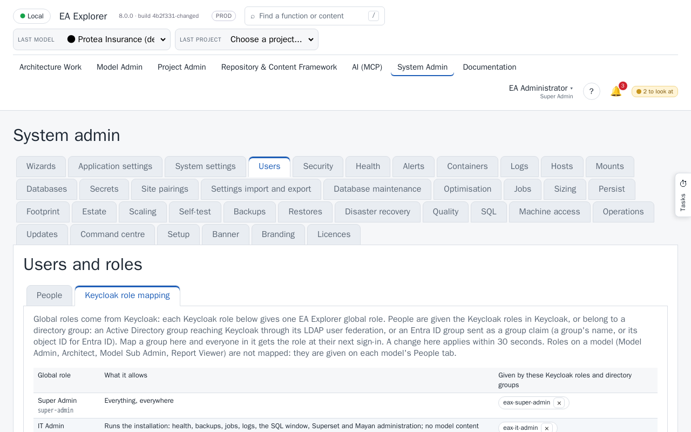

Map directory groups to roles
For: System Admin
Make a Keycloak role or a directory group give an EA Explorer role, so people get their roles from the groups they are already in.

#/admin/users/mappingWhy do this
When EA Explorer signs in against your directory, mapping its groups to roles means nobody grants access by hand. A person who changes team gets the right roles at their next sign-in. See Roles and access.
Access in EA Explorer is layered so each owner decides for their own part: System Admins for the installation, Model Admins for models, Project Admins for projects. Most people need only a few roles to do their work.
In TOGAF terms: The Preliminary phase's architecture capability: who does architecture work and with what authority. Sign-in itself is outside the method. See EA Explorer and the TOGAF Standard.
The goal: Access follows your directory's groups.
Before you start You need the User Admin or Super Admin role. Your directory (Active Directory or another LDAP, or your identity provider) is connected to Keycloak.
Steps
- Open System Admin › Users and roles › Keycloak role mapping.
- Choose the Keycloak role or directory group, and the EA Explorer global role it gives (for example the group EA-Architects gives user, EA-Admins gives it-admin).
- Add. The mapping applies at each person's next sign-in.
Check it worked
A person in that group signs in again; System Admin › Users and roles shows the role on them, with where it came from.
If something goes wrong
- Nothing changed for the person: they must sign out and in again. Check the group name is exactly as Keycloak sees it.
- To take a mapping away: Remove beside it; people keep any role given to them directly.